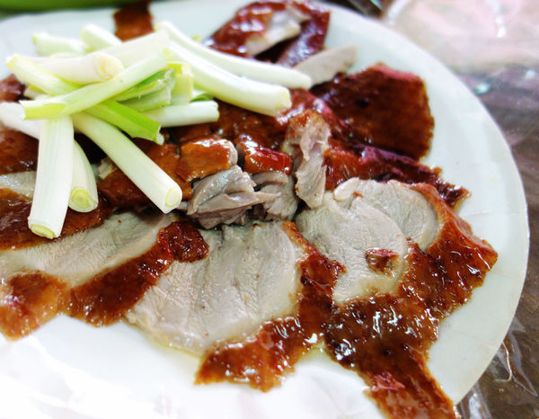

好可口烤鴨
若要說到台南必吃的美食，烤鴨絕對是其中不能錯過的美味之一，熱血近期也是超瘋狂的在找台南好吃的烤鴨店，像是位於北區長榮路四段上的便宜坊烤鴨和府前路上的府前烤鴨專賣店，都是熱血近期很愛的店家，但是~這次要介紹的這間「好可口烤鴨」更是顛覆了我對於吃烤鴨的既定印象，人人稱讚較好的鹹酥烤鴨那才是經典中的美味啊！。
鴨的吃法絕對是吃烤鴨的入門款，搭配上鴨餅、甜麵醬和蔥段，百吃不膩的吃法啊！不過當天我在吃的時候有點可惜，因為片鴨吃起來竟然有點油膩，但整體上來說還是表現在水準上啦~
超級好吃。

奶油香草烤全雞
好可口烤鴨
豬絞肉漢堡排
心得